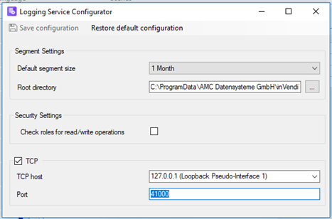
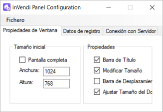
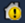

Aplicaciones instaladas
InVendi License Management
InVendi License Management es el gestor de licencias de InVendi, en esta aplicación se configuran las licencias para poder disfrutar de todas las funcionalidades que componen InVendi. Para ello se permite:
Borrar licencias
Para eliminar una licencia hacer clic en la licencia a eliminar. Luego hacer clic en License y en Remove.
Añadir licencias
Para añadir una licencia hacer clic en License y seguidamente en Add... Se abre el File Explorer donde se debe seleccionar la licencia a importar. Al hacerlo aparece en la lista.

InVendi Logging Configurator
InVendi Logging Configurator permite gestionar el tiempo del ciclo de archivado de datos de los proyectos de InVendi.
La aplicación permite configurar:
Segment Settings
Este apartado permite configurar el tamaño del segmento entre las siguientes opciones: 1 día, 1 mes, 3 meses, 6 meses y 1 año. Además, de la carpeta donde se guardan el archivo con los datos.
Security Settings
Este permite habilitar o deshabilitar el check roles para operaciones de lectura y/o escritura.

TPC
Si se habilita con el servidor de datos mediante protocolo TCP1 se permite:
- Añadir el TCP Host2 y el Port3.
Para que se aplique la nueva configuración se deben guardar los cambios haciendo clic en Save Configuration. Si se necesita borrar los cambios, hacer clic en Restore Default Configuration.
InVendi Panel Configuration
InVendi Panel Configuration permite configurar el panel de runtime del proyecto, InVendi Panel.
La aplicación contiene las siguientes pestañas:
Propiedades de Ventana
Esta pestaña permite modificar la visualización del Panel mediante las siguientes funciones:
Para modificar el tamaño permite habilitar la opción de pantalla completa o introducir manualmente la altura y ancho de esta.
Permite activar o desactivar las siguientes propiedades:

- Barra de Título: Mostrar la barra del título de la aplicación
- Barra de Desplazamiento: Añade una barra de desplazamiento vertical en la parte lateral de la aplicación
- Ajustar Tamaño del Documentos: Permite que el tamaño de la pantalla de proyecto se ajuste automáticamente.
Datos de registro
Esta pestaña permite configurar el inicio de sesión automático. Para ello permite:
1. Habilitar la opción Automatic Logon.
2. Introducir el usuario.
3. Introducir la contraseña.

Conexión con servidor
Esta pestaña permite configurar como se realiza la conexión con el servidor. Para ello, se debe seleccionar el tipo de protocolo entre: ‘Local’, ‘Remoto sobre HTTP’ o ‘Remoto sobre TCP’. Al seleccionar las dos últimas opciones se habilitan los campos Dirección y Puerto.

Visualización del proyecto - InVendi Panel
InVendi Panel se encarga de mostrar el proyecto en tiempo de ejecución (runtime). Mediante la aplicación, el operario puede ver los datos y realizar las acciones en el sistema en tiempo real.
La aplicación de InVendi Panel Configuration es la encargada de configurar la visualización de esta aplicación.
Configuración de conexión - InVendi Server Configuration
InVendi Server Configuration es la aplicación encargada de enlazar el proyecto de InVendi Editor al sistema que sirve los datos, mediante la configuración de la conexión con el sistema.
Para configurar la conexión se debe seguir los siguientes pasos:
1. Añadir la ruta del proyecto de inVendi a mostrar en el apartado Proyecto.
2. Hacer clic en [+]. Seleccionar una interfaz en Configured Interfaces o añadir una nueva seleccionando
3. Seleccionar el tipo de interfaz a configurar entre: IP Tunneling, IP Routing y USB Interface. El tipo de interfaz ‘USB’ tiene el siguiente aspecto:
3. Una vez seleccionada, hacer clic en Rescan, seleccionar la interfaz conectada y añadir la dirección individual de esta.
4. Para acabar, hacer clic en Select. Para comprobar que la conexión se ha realizado correctamente hacer clic en Test. Debajo de este aparece un mensaje informando si la conexión es correcta o no.
5. En el caso de que la conexión se realice mediante IP, hacer clic en Accessibility y asignar la IP que le corresponda.
5. En el caso de que la conexión se realice mediante IP, hacer clic en Accessibility y asignar la IP que le corresponda.
6. Finalmente, hacer clic en File. Aparece la opción de Save, seleccionarla para guardar los cambios. Esto reinicia el servidor con la nueva configuración.
Gestión del servidor - InVendi Server Monitor
InVendi Server Monitor permite gestionar el estado del servidor de la aplicación. Para acceder a sus funciones se debe hacer clic con el botón derecho del ratón en la casita que aparece en la Taskbar de Windows. Sus funciones son:
- Encender servidor mediante clic en Start Server
- Parar servidor mediante clic en Stop Server
- Reiniciar servidor mediante clic en Restart Server
- Salir de la aplicación mediante clic en Exit.
- Acceder a la aplicación Server Configuration mediante clic en Configure…
Para saber el estado en el que se encuentra el servidor hay que fijarse en el icono delante del símbolo de una casa. Según el icono significa lo siguiente:

Icono verde : la comunicación funciona correctamente.

Icono amarillo : la comunicación no se está llevando a cabo.
Icono rojo : el servidor está parado.
Además, al pasar por encima del icono el cursor muestra la siguiente información sobre su estado:
- Serverstate: muestra el estado del servidor, si está en marcha o parado
- License: los valores que admite la licencia
- Projectstate: si el proyecto está abierto o cerrado.
- Projectinformation: cual es el proyecto configurado en el servidor
- Connections: cual es el Value Accessor configurado para el proyecto configurado en el servidor.
Configuración del proyecto - InVendi Editor
InVendi Editor es la aplicación donde se configura y se realiza el proyecto en fase de ingeniería. Permite al integrador gestionar y parametrizar tanto las opciones del proyecto como:
- Usuarios
- Idiomas de la interfaz
- Componentes y objetos gráficos
- Scripts de configuración
- Escenas para ambientación
- Tareas programables


En la siguiente sección se habla más en detalle de los elementos y funciones que componen inVendi Editor.